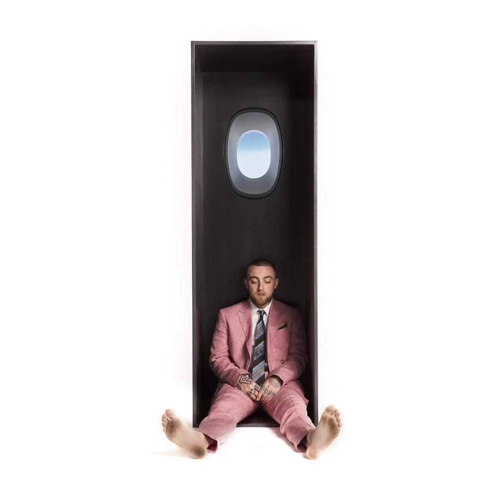

DISCOGRAPHY
1.) Blue Slide Park
Mac takes you to his home town in Pitsburg to Blue slide Park where he discusses his come up and feelings associated with it in party anthem form with a nostalgic sound.
2.) Macadelic
Although a mixtape, Mac shows more creativity than ever previously. Influenced by the Beatles with deeper philsophical questioning makes for a trippier body of work.

3.) Watching Movies with the Sound Off
Here we hear the biggest change in artistic direction. Mac gets into his darker side, facing mental illness and drug abuse. We navigate through Mac’s dark thoughts that consume him on the daily. The instrumentals accent the mood with an atmosphereic and psychedelic tone. The album is meant to be played over a muted movie so that the songs change the meaning of the movie.
4.) Faces
Faces is a different approach to the “dark side of his bizzar mind”. 24 songs that take you on a journey through a drug addicts mind.This tape showcases some of Mac’s best production and lyricism.
5.) GOOD AM
Signed to a new label, Mac takes us on a more positive route. A mainstream approach is taken and quickly became Mac’s most favored album to the average listener.
6.) The Divine Feminine
An Album entirely focused on love. Smooth, jazzy instrumentals emote a strong feeling to help showcase how that feels.
7.) Swimming
The last album to come from the artist balances depression and optimism.He starts by looking for a way out of his head and ends with “so it goes”, a phrase used by Kurt Vonnegut every time a death occurs. Overall this album is truly beautiful and things feel clear for the first time.
